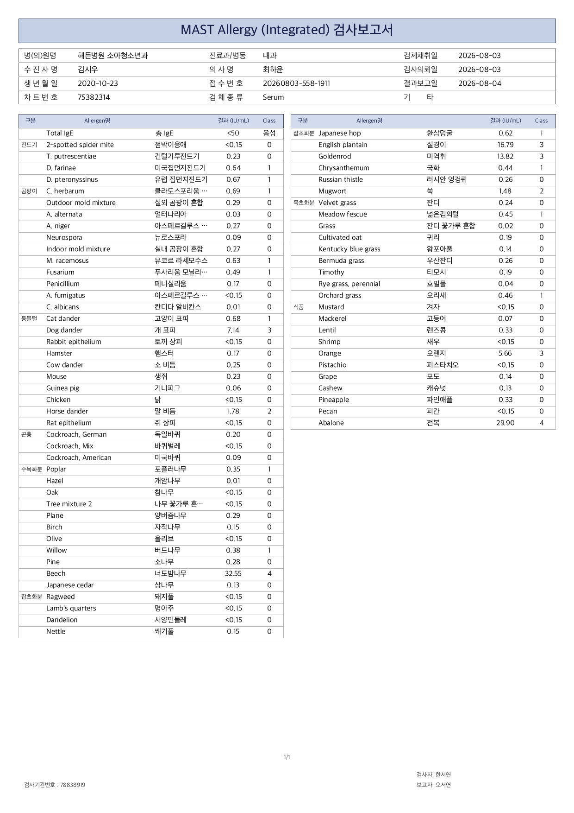

PUBLIC SYNTHETIC EXAMPLE · OCR
합성 MAST 검사지와 구조화 결과
같은 저장소의 합성 이미지와 정답 JSON을 나란히 표시합니다.
연구·시연 전용입니다. 이름과 식별자는 공개 사례용 값입니다. 이 결과를 진료에 사용하지 마십시오.
69정답 행
571OCR 단어
68이름 문자열 발견
1이름 문자열 미발견
1. 합성 검사 이미지

2. 실제 로컬 OCR 원문
tesseract 5.5.3 kor+eng PSM 3
MAST Allergy (Integrated) 검사보고서 병(의)원명 해든병원 소아청소년과 진료과/병동 내과 검체채취일 2026-08-03 수진자명 김시우 의사명 최하윤 검사의뢰일 2026-08-03 생년월일 2020-10-23 접수번호 20260803-558-191 결과보고일 2026-08-04 차트번호 75382314 검체종류 Serum 기 타 구분 Allergen 결과 (U/mL) Class 구분 Allergen 결과 (U/mL) Class Total IgE Slee <50 음성 ㅣ 잡초화분 Japanese hop 환삼덩굴 0.62 1 진드기. 2-500660 spider mite 점박이응애 <0.15 0 English plantain 질경이 16.79 3 T. putrescentiae 긴털가루진드기 0.23 0 Goldenrod 미역취 13.82 3 D. farinae 미국집먼지진드기 0.64 1 Chrysanthemum 국화 0.44 1 D. pteronyssinus 유럽 집먼지진드기 0.67 1 Russian thistle 러시안 IAal 0.26 0 골팡이. <. herbarum 클라도스포리움… 0.69 1 Mugwort 쑥 148 2 Outdoor mold mixture 실외 곰팡이 혼합 0.29 0 목초화분 Velvet grass 잔디 0.24 0 A.alternata 얼터나리아 0.03 0 Meadow fescue 넓은김의털 0.45 1 A. niger 아스페르길루스 … 0.27 0 Grass 잔디 꽃가루 혼합 0.02 0 Neurospora 뉴로스포라 0.09 0 Cultivated oat 귀리 0.19 0 Indoor mold mixture 실내 곰팡이 훈합 0.27 0 Kentucky blue grass 왕포아풀 0.14, 0 M. racemosus 뮤코르 라세모수스 0.63 1 Bermuda grass 우산잔디 0.26 0 Fusarium 푸사리움 모닐리… 0.49 1 Timothy 티모시 0.19 0 Penicillium 페니실리움 0.17 0 Rye grass, perennial 호밀풀 0.04 0 A. fumigatus 아스페르길루스… <0.15 0 Orchard grass 오리새 0.46 1 C. albicans 칸디다 알비칸스 0.01 0 식품 Mustard 겨자 <0.15 0 SEE Cat dander 고양이 표피 0.68 1 Mackerel 고등어 0.07 0 Dog dander 개 표피 714 3 Lentil 렌즈콩 0.33 0 Rabbit epithelium 토끼 상피 <0.15 0 Shrimp 새우 <0.15 0 Hamster 햄스터 07 0 Orange 오렌지 5.66 3 Cow dander 소 비듬 0.25 0 Pistachio 피스타치오 <0.15 0 Mouse 생쥐 0.23 0 Grape 포도 0.14 0 Guinea pig 기니피그 0.06 0 Cashew Wael 0.13 0 Chicken 닭 <0.15 0 Pineapple 파인애플 0.33 0 Horse dander 말 비듬 178 2 06000 피칸 <0.15 0 Rat epithelium al 상피 <0.15 0 Abalone 전복 29.90 4 2 Cockroach, German 독일바퀴 0.20 0 Cockroach, Mix 바퀴벌레 <0.15 0 Cockroach, American 미국바퀴 0.09 0 수목화분 Poplar 포플러나무 0.35 1 Hazel 개암나무 0.01 0 Oak 참나무 <0.15 0 Tree mixture 2 나무 꽃가루 혼… <0.15 0 Plane 양버즘나무 0.29 0 Birch 자작나무 0.15 0 Olive 올리브 <0.15 0 Willow 버드나무 0.38 1 Pine 소나무 0.28 0 Beech 너도밤나무 32.55 4 Japanese cedar 삼나무 0.13 0 잡초화분 Ragweed 돼지풀 <0.15 0 Lamb's quarters 명아주 <0.15 0 Dandelion 서양민들레 <0.15 0 Nettle 471e 0.15 0 버 검사자 한서연 검사기관번호 :78838919 보고자 오서연
3. 알려진 정답과의 투명한 점검
아래 표는 정규화한 항원 이름이 OCR 원문에 있는지만 확인합니다. 값은 행에 연결하지 않았으므로 정확도 지표가 아닙니다.
| # | 정답 항원 | 정답 값 | OCR 원문 |
|---|---|---|---|
| 5 | Cladosporium herbarum | 0.69 | not found |
| 1 | 2-spotted spider mite | <0.15 | found |
| 2 | Tyrophagus putrescentiae | 0.23 | found |
| 3 | Dermatophagoides farinae | 0.64 | found |
| 4 | Dermatophagoides pteronyssinus | 0.67 | found |
Tesseract 5.5.3이 합성 검사지에서 읽은 결과입니다. 이후 문진과 안내문, FHIR 파일에는 합성 검사지를 만들 때 지정한 기준값을 사용했습니다. OCR 원문 JSON · 기준값과 대조한 JSON